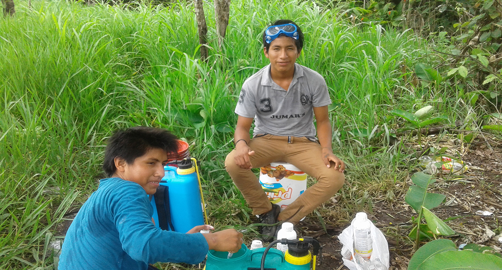

HISTORIA Y
DESCRIPCION
La Unidad Educativa QUIQUIBEY fue fundada el 24 de mayo de 1986. Esta unidad educativa se encuentra en el departamento de Beni Prov.Gral Jose Ballivian en el Distrito de San Borja, en la localidad de Quiquibey. Cuenta con los grados de estudio Inicial, Primaria, secundaria; la calidad de enseñanza es muy bueno tiene docentes con muy buen metodo de enseñanza, el 2012 egresaron los primeros bachilleres de la unidad educativa y hasta el momento llevamos 12 promociones.
Informacion

-


- 